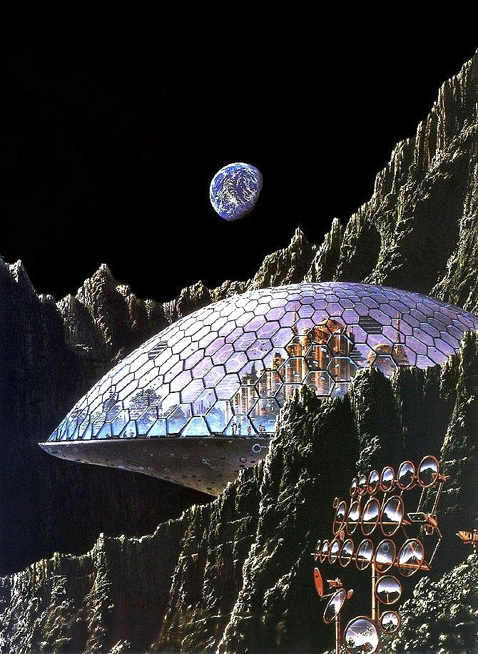
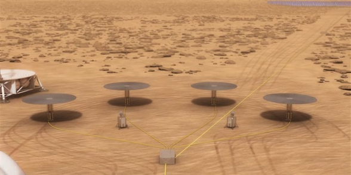
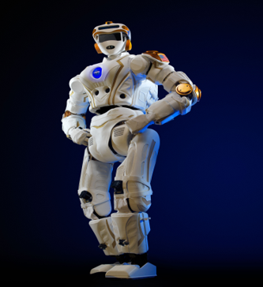
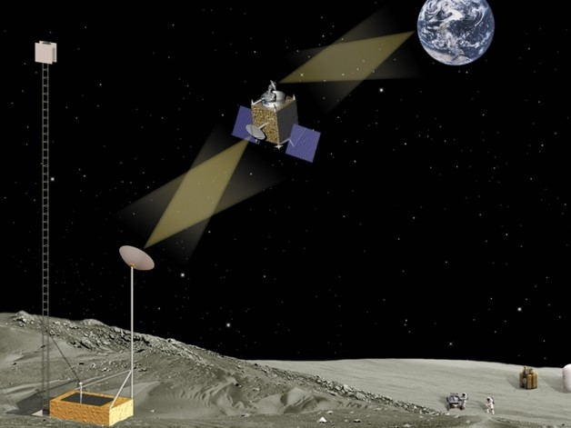
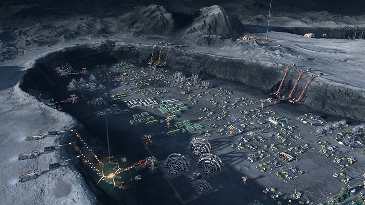

Astro-Tech Communication aspires to place a datacenter on the moon. The challenges for this include environmental and cooling, infrastructure and maintenance, power, and communications.
We will be placing two datacenters on the moon. Each will be in a crater. The two locations are named Aristoteles and Aristarchus. These craters were chosen because of their more northern location and the fact that they are Earth facing. Their locations and enable them to be more regular in the Moon's temperature range of -413 to 224 degrees Fahrenheit. Given that the datacenter is beneath the surface, the temperature will be more stable. Additional stability to temperature control will be provided by a dome that covers the opening of the craters. This dome will be insulated on the inside and painted with a reflective material on the outside. The material will be similar to that used by Nasa which reflects 90% of the sun's heat. To accomplish cooling and heating we will either send water out with the materials or mine it from the northern pole of the Moon which has frozen water. The water will be used to create oxygen, similar to a process on the International Space Station (IIS). Oxygen is necessary to create airflow which will be used by fans and to heat and cool.
Power will be accomplished by mining helium-3 which the moon has enough of to power the entire earth and by solar panel arrays. The arrays will be lined with thin silicon material that will enable it to endure extreme conditions. This process exists currently with the IIS solar arrays.
Infrastructure will be maintained by robots similar to Nasa’s R5-Valkyrie. All robots will be connected to a hive mind AI system and will be able to be manually controlled from Earth in necessary. Currently the servers we have agreed on are the IBM 940 E8E P series but this could easily change with future technology. SSD drives are an absolute. All media will be fiber, laser, or RF; there will be no twisted pair due to the susceptibility to EMI. All cables will be enclosed in conduit that is environmentally controlled.
Communication between Earth and Moon shall be accomplished by satellite. There will be a mesh of geosynchronous satellites around the Moon and Earth. The two mesh networks will be connected via a satellite relay them. How many is dependent upon technologies of the times when implemented. From the mesh down to the Moon or Earth we will us KU-band (12-14GHz). From mesh to mesh communcation we will use KA-band (26.5-40GHz). Although KA band has superior throughput it is not the best choice when traversing an atmosphere. All signals will be encrypted with Inter Key Exchange and keys will change on classified interval. Additionally, we would like to use lasers as another media form. At this time the technology is fairly infant.
This concludes our initial planning phase. The only thing not covered is what benefits would be achieved. The obvious here is physical security. Data would also be encrypted to attract the immediate customer. For the customer who dreams, the selling point is innovation. If this project was to be created it would provide a communications backbone for the future. Any association who wished to experiment in space, on the moon, or colonize would likely attempt at using this resource rather than create their own. Committing to this project would assist in the solidification of man kinds legacy in the Universe.